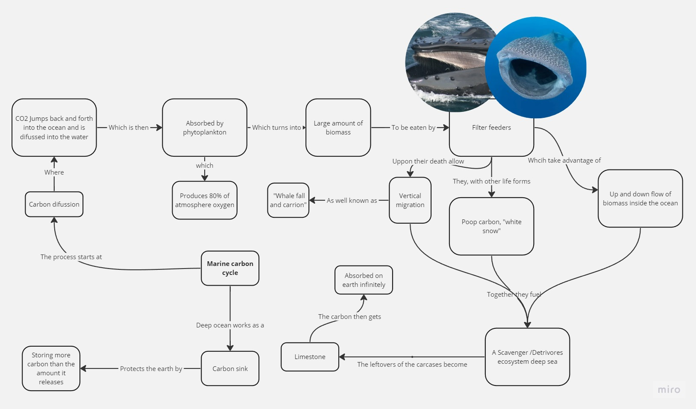

MIND MAP A TALK Remember you can scroll down even if the bar doesn't appear
Mind Map Developed

Reflections
How might this talk help you prepare for your next English 10 speech? Why?
This listening talk can aid me in preparing for my next English 10 speech by introducing a technique to organize my ideas and thoughts effectively. Utilizing this method will allow me to structure my speech in a way that is easy to understand and follow, enhancing the overall clarity.
Moreover, the talk delved into a complex topic and lasted for 20 minutes, making it challenging to follow. However, the speaker employed the mind map technique to organize their ideas and thoughts coherently, making the complex topic more accessible. Learning from this, I can apply mind maps to understand intricate subjects more easily, which will be beneficial during the preparation of my upcoming English 10 speech.
What future relevance might this listening experience have for you?
I consider the technique of creating mind maps to be an exceptionally useful tool for the future, whether it's for school or work. This method proves invaluable in organizing ideas and thoughts, providing a clear and easily understandable structure. Employing this technique will enhance the clarity of my work, making it more comprehensible and accessible
Additionally, as a software engineer, I will often need to summarize complex technologies and architectures in an understandable way. Utilizing mind maps will contribute to the quality of my work by ensuring that the topics are well-organized and clear in my mind.